Jesteś tutaj: Matura → Matura podstawowa - zadania CKE
Matura podstawowa - zadania CKE
Poniżej znajduje się zestaw 134 zadań treningowych
przygotowany przez CKE.
Na początku roku akademickiego mężczyźni stanowili \(40\%\) wszystkich studentów.
Na koniec roku liczba wszystkich studentów zmalała o \(10\%\) i wówczas okazało się, że mężczyźni
stanowią \(33\frac{1}{3}\%\) wszystkich studentów. O ile procent zmieniła się liczba mężczyzn na
koniec roku w stosunku do liczby mężczyzn na początku roku?
o \(25\%\)
Funkcja \(f\) jest funkcją kwadratową. Zbiorem wszystkich rozwiązań nierówności
\(f(x)\lt 0\) jest przedział \((1,5)\). Rozwiąż nierówność \(-f(x+3)\lt 0\).
\(x\in (-\infty ,-2)\cup (2,+\infty )\)
Wartość wyrażenia \(\frac{\sqrt[3]{4}\cdot \sqrt[3]{-16}}{-8}\) jest równa
A.\( 2^{\frac{1}{3}} \)
B.\( 2^{\frac{1}{2}} \)
C.\( 2^{-1} \)
D.\( 2^{-2} \)
C
Odwrotnością liczby \(2\sqrt{2}\cdot \left(\frac{1}{8}\right)^{-\frac{4}{3}}\) jest
liczba
A.\( -2^{\frac{11}{2}} \)
B.\( -2^{-\frac{11}{2}} \)
C.\( 2^{-\frac{11}{2}} \)
D.\( 2^{\frac{11}{2}} \)
C
Liczba \(\sqrt[3]{4^{-1}}\cdot 2^{\frac{1}{4}}\cdot 16^{\frac{1}{3}}\) jest równa
A.\( 2^{\frac{1}{6}} \)
B.\( 2^{\frac{1}{4}} \)
C.\( 2^{\frac{1}{3}} \)
D.\( 2^{\frac{11}{12}} \)
D
Dane są liczby \(a=\log 3\), \(b=\log 2\). Wyznacz logarytm dziesiętny z liczby
\(72\) za pomocą \(a\) i \(b\).
\(2a+3b\)
Liczba o \(2\) większa od liczby \(\log_5 4\) jest równa
A.\( \log_5 6 \)
B.\( \log_5 8 \)
C.\( \log_5 29 \)
D.\( \log_5 100 \)
D
Na lokacie złożono \(1000\) zł przy rocznej stopie procentowej \(p\%\) (procent
składany). Odsetki naliczane są co kwartał. Po upływie roku wielkość kapitału na lokacie będzie
równa
A.\( 1000\left( 1+\frac{4p}{100} \right) \)
B.\( 1000\left( 1+\frac{p}{100} \right)^4 \)
C.\( 1000\left( 1+\frac{p}{400} \right) \)
D.\( 1000\left( 1+\frac{p}{400} \right)^4 \)
D
Dany jest trójkąt o bokach długości \(a\), \(b\), \(c\). Stosunek \(a:b:c\) jest
równy \(3:5:7\). Które zdanie jest fałszywe?
A.Liczba \(c\) jest o \(12{,}5\%\) mniejsza od liczby \(a+b\).
B.Liczba \(a\) stanowi \(20\%\) liczby \(a+b+c\).
C.Liczba \(a\) stanowi \(25\%\) liczby \(b+c\).
D.Liczba \(b\) to \(60\%\) liczby \(c\).
D
Nominalna stopa oprocentowania lokaty wynosi \(3\%\) w stosunku rocznym (bez
uwzględnienia podatku). Odsetki kapitalizowane są na koniec każdego kolejnego okresu
czteromiesięcznego. Oblicz, jaką kwotę wpłacono na tę lokatę, jeśli na koniec ośmiu miesięcy
oszczędzania na rachunku lokaty było o \(916{,}56\) zł więcej niż przy jej otwarciu.
\(45600\)
W pewnej szkole przez trzy kolejne lata zmieniała się liczba uczniów. W pierwszym
roku liczba uczniów zmalała i na koniec roku była o \(10\%\) mniejsza niż na początku. W drugim roku
wzrosła i ukończyło go \(20\%\) więcej uczniów niż pierwszy. O ile procent, w stosunku do liczby
uczniów kończących drugi rok, zmniejszyła się ich liczba w następnym roku, jeśli na koniec trzeciego
roku było tyle samo uczniów co na początku pierwszego? Wynik zaokrąglij do \(0{,}1\%\).
\(7{,}4\%\)
Autobus nazywamy przepełnionym, jeżeli w pewnym momencie znajduje się w nim co
najmniej \(50\) pasażerów. Dwóch inspektorów monitoruje liczbę pasażerów w tych samych
dziesięciu autobusach. Jeden z nich obliczył, jaki procent wszystkich autobusów stanowią autobusy
przepełnione, a drugi - jaki procent wszystkich pasażerów w \(10\) autobusach stanowili pasażerowie
podróżujący przepełnionymi pojazdami. Wiadomo, że liczba autobusów przepełnionych należy do zbioru
\(\{1,2,...,9\}\). Który z inspektorów otrzymał większą liczbę?
drugi inspektor
Dane są liczby: \[\begin{split} &a=3\log_3 2-\log_3 16\\[6pt] &b=2\log_3 6-\log_3
18 \end{split}\] Wykaż, że \(a+b=0\).
Uzasadnij, że dla wszystkich liczb rzeczywistych dodatnich \(x\) różnych od
\(\frac{1}{3}\) wartość wyrażenia \[\log_{3x}\bigl(3x^2\bigl)+\log_{3x}\bigl(9x\bigl)\] jest większa
od \(2\).
Na rysunku przedstawiono wykresy trzech parami przecinających się prostych. 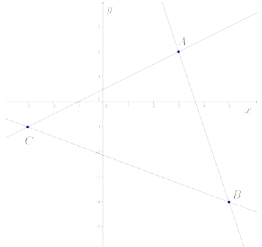 Te proste to:
A.\(\begin{split}&x-2y=-1\\&3x+y=11\\&3x+8y=-17\end{split}\)
B.\( \begin{split}&x-2y=-1\\&3x+y=-11\\&3x+8y=-17\end{split} \)
C.\( \begin{split}&x-2y=1\\&3x+y=11\\&3x+8y=-17\end{split} \)
D.\( \begin{split}&x-2y=-1\\&3x+y=11\\&3x+8y=17\end{split} \)
A
Dany jest trójkąt \(ABC\), którego boki zawierają się w prostych o równaniach:
\(y=\frac{1}{2}x+1\), \(y=7-x\) oraz \(y=0\). Oblicz pole trójkąta \(ABC\).
\(\frac{27}{2}\)
Wyznacz takie liczby \(a\) i \(b\), dla których układ równań \(\begin{cases}
4x+y+2=0\\ax^2+y+b=0 \end{cases} \) jest sprzeczny, zaś układ równań \(\begin{cases}
4x+y-2=0\\b^2x+y+a=0 \end{cases}\) ma nieskończenie wiele rozwiązań.
\(a=-2\), \(b=-2\)
Rozwiązaniem układu równań pierwszego stopnia z dwiema niewiadomymi jest para
różnych dodatnich liczb całkowitych. Jednym z równań tego układu jest \(2x+y=6\). Wyznacz drugie
równanie układu, wiedząc, że jest to równanie prostej przechodzącej przez początek układu
współrzędnych.
\(y=4x\)
Wśród podanych poniżej nierówności wskaż tę, której zbiorem rozwiązań jest
przedział \((-3,1)\).
A.\( x(x+2)\lt 3 \)
B.\( x(x+4)\lt 1 \)
C.\( x(x+3)\lt 1 \)
D.\( x(x+1)\lt 3 \)
A
W tabelce podano wartości funkcji kwadratowej \(f(x)=ax^2+bx+c\) dla wybranych
trzech argumentów.
Rozwiąż nierówność \(f(x)\ge 0\).
| \(x\) | \(0\) | \(1\) | \(6\) |
| \(f(x)\) | \(-2\frac{1}{2}\) | \(0\) | \(-2\frac{1}{2}\) |
\(x\in \langle 1,5\rangle \)
Rozważmy prostokąt o polu mniejszym od \(24\), w którym jeden bok jest od drugiego
dłuższy o \(5\). Oblicz długość dłuższego boku prostokąta, jeśli jest ona liczbą całkowitą parzystą.
\(6\)
Równanie \(\frac{3(2-x)}{4x-3}=\frac{3}{2}\) nie ma takiego samego
rozwiązania, jak równanie:
A.\( 6(2-x)=3(4x-3) \)
B.\( \frac{2}{3}(6-3x)=4x-3 \)
C.\( 9(2-x)=2(4x-3) \)
D.\( 3(2-x)=\frac{3}{2}(4x-3) \)
C
Do wyrażenia \(\frac{1}{x+1}\) określonego dla \(x\ne -1\) dodano jego odwrotność.
Oblicz \(x\), dla którego otrzymana suma jest równa \(2\).
\(x=0\)
Do napełniania basenu służą dwie pompy. Pierwsza z nich ma wydajność o \(20\%\)
większą niż druga. Napełnienie pustego basenu tylko drugą pompą trwa o \(1\) godzinę i \(40\) minut
dłużej niż przy użyciu tylko pierwszej pompy. Oblicz, jaką część pustego basenu napełnią w ciągu
jednej godziny obie pompy, pracując jednocześnie.
\(\frac{22}{100}\)
Na rysunku przedstawiony jest fragment wykresu funkcji kwadratowej \(f\).  Osią symetrii paraboli jest
prosta o równaniu \(x=-3\). Rozwiązaniem nierówności \(f(x)\le 0\) jest zbiór
Osią symetrii paraboli jest
prosta o równaniu \(x=-3\). Rozwiązaniem nierówności \(f(x)\le 0\) jest zbiór
Osią symetrii paraboli jest
prosta o równaniu \(x=-3\). Rozwiązaniem nierówności \(f(x)\le 0\) jest zbiór A.\( \langle 0,-3\rangle \)
B.\( \langle -3,3\rangle \)
C.\( \langle -6,3\rangle \)
D.\( \langle -9,3\rangle \)
D
Funkcja \(W\) jest określona wzorem \(W(x)=3x^4-bx-2a\) dla wszystkich liczb
rzeczywistych. Równość \(W(-1)+W(1)=0\) zachodzi, gdy
A.\( a=\frac{2}{3} \)
B.\( a=\frac{3}{2} \)
C.\( a=1 \)
D.\( a=-1 \)
B
Na tablicy zapisano następujące potęgi: \(\left(2^2\right)^{(2^2)},
\left(2\right)^{(2^{2^2})}, \left(2^{2^2}\right)^2, \left(2\right)^{{\left(2^2\right)}^2}\). Ile
różnych liczb reprezentują te zapisy?
A.\( 4 \)
B.\( 3 \)
C.\( 2 \)
D.\( 1 \)
C
Wyznacz wzór funkcji kwadratowej \(f\) w postaci ogólnej, wiedząc, że zbiorem
wartości tej funkcji jest przedział \((-\infty ,-1\rangle \), a wartość \(-5\) osiąga ona
dla dwóch argumentów: \(2\) i \(10\).
\(f(x)=-\frac{1}{4}x^2+3x-10\)
Na rysunku są przedstawione fragmenty wykresów funkcji kwadratowych \(f\) i \(g\).
Funkcja \(f\) jest określona wzorem \(f(x)=-x^2+6x-5\), a mniejsze z jej miejsc zerowych jest
jednocześnie miejscem zerowym funkcji \(g\). Wierzchołek \(W\) paraboli, która jest wykresem funkcji
\(f\), leży na wykresie funkcji \(g\), a wierzchołek \(Z\) paraboli będącej wykresem funkcji \(g\)
leży na osi \(Oy\) układu współrzędnych. Wyznacz wzór funkcji \(g\). 
\(g(x)=\frac{1}{2}(x-1)(x+1)\)
Różnica największej i najmniejszej wartości, jakie funkcja kwadratowa
\[f(x)=-\frac{1}{2}x^2-2x+6\] przyjmuje w przedziale \(\langle -3,k\rangle \) dla \(k\gt 0\) jest
równa \(4\frac{1}{2}\). Oblicz \(k\).
\(k=1\)
Na rysunku 1. jest przedstawiony wykres funkcji \(f\), a na rysunku 2. - wykres
funkcji \(g\).  Funkcja \(g\)
jest określona wzorem
Funkcja \(g\)
jest określona wzorem
Funkcja \(g\)
jest określona wzorem A.\( g(x)=-f(x) \)
B.\( g(x)=f(-x) \)
C.\( g(x)=f(x)+4 \)
D.\( g(x)=f(x)-4 \)
A
Wyznacz wartość największą funkcji \(f(x)=\frac{1}{x^2+4x-1}\) w przedziale
\(\langle 1,3\rangle \).
\(\frac{1}{4}\)
Funkcja \(f\), której dziedziną jest zbiór \(\langle -1,5\rangle \), jest określona
wzorem \(f(x)=-x^2+6x+5\). Wyznacz zbiór wszystkich wartości funkcji \(f\).
\(\langle -2,14\rangle \)
Wykres funkcji kwadratowej \(f\) przecina oś \(Ox\) w punktach \(x=1\) oraz \(x=3\)
i przechodzi przez punkt \((0,-3)\). Wykres ten przesunięto i otrzymano wykres funkcji kwadratowej
\(g(x)=f(x-p)\). Wierzchołek funkcji \(g\) leży na osi \(Oy\). Wyznacz wzór funkcji \(g\).
\(g(x)=-x^2+1\)
Parabola, która jest wykresem funkcji kwadratowej \(f(x)=ax^2+bx+c\), przechodzi
przez punkt \((-2,10)\) oraz \(f(-1)=f(3)=0\). Oblicz odległość wierzchołka paraboli od początku
układu współrzędnych.
\(\sqrt{65}\)
Dana jest funkcja kwadratowa \(f(x)=ax^2+4x+1\). Wierzchołek paraboli, która jest
wykresem tej funkcji, leży na prostej o równaniu \(y=-5\). Oblicz współrzędne tego wierzchołka.
\((-3,-5)\)
Zbiorem wartości funkcji kwadratowej \(f(x)=-\frac{1}{3}x^2-2x+c\) jest przedział
\((-\infty ,7\rangle \). Zatem współczynnik \(c\) jest równy
A.\( -3 \)
B.\( 4 \)
C.\( 7 \)
D.\( 10 \)
B
Największa wartość funkcji kwadratowej \(f(x)=a(x-2)^2-4\), gdzie \(a\ne 0\), w
przedziale domkniętym \(\langle -4,-2\rangle \) jest równa \(12\). Wyznacz najmniejszą wartość
funkcji \(f\) w przedziale \(\langle -4,-2\rangle \).
\(\frac{28}{9}\)
Funkcja kwadratowa \(f\), której miejscami zerowymi są liczby \(-2\) i \(4\), dla
argumentu \(1\) przyjmuje wartość \(3\). Uzasadnij, że wykres funkcji \(f\) ma dwa punkty wspólne z
prostą \(y=2\).
Wierzchołki trójkąta \(ABC\) leżą na paraboli, która jest wykresem pewnej funkcji
kwadratowej \(f\) (zobacz rysunek).  Pole trójkąta jest równe \(8\), punkt \(C=(1,4)\) jest wierzchołkiem paraboli, a
punkty \(A\) i \(B\) leżą na osi \(Ox\). Wyznacz wzór funkcji \(f\).
Pole trójkąta jest równe \(8\), punkt \(C=(1,4)\) jest wierzchołkiem paraboli, a
punkty \(A\) i \(B\) leżą na osi \(Ox\). Wyznacz wzór funkcji \(f\).
Pole trójkąta jest równe \(8\), punkt \(C=(1,4)\) jest wierzchołkiem paraboli, a
punkty \(A\) i \(B\) leżą na osi \(Ox\). Wyznacz wzór funkcji \(f\).\(f(x)=-(x-1)^2+4\)
W układzie współrzędnych na płaszczyźnie rysujemy łamane. Kolejne wierzchołki
każdej z tych łamanych to punkty: \[A_1=(0,0),\quad A_2=(1,0),\quad A_3=(1,-1),\quad
A_4=(-1,-1),\quad A_5=(-1,1),\quad A_6=(2,1)\] i tak dalej. Na rysunku jest przedstawiona łamana
składająca się z dziesięciu odcinków, której ostatnim wierzchołkiem jest punkt \(A_{11}=(3,-3)\).
Funkcja \(f\) przyporządkowuje każdej liczbie naturalnej \(n\ge 1\) długość łamanej złożonej z
\(2n\) odcinków, czyli takiej, której początkowym wierzchołkiem jest punkt \(A_1\), a końcowym
\(A_{2n+1}\). Wyznacz wzór funkcji \(f\) oraz oblicz jej wartość dla \(n=33\). 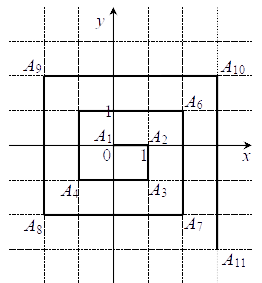
\(f(n)=n(n+1)\)
\(f(33)=1122\)
\(f(33)=1122\)
Dany jest trójkąt prostokątny o kątach ostrych \(\alpha \) i \(\beta \), w którym
\(\sin \alpha = \frac{\sqrt{6}}{3}\). Wtedy
A.\( \cos \alpha =\frac{\sqrt{3}}{2} \)
B.\( \cos \beta =\frac{\sqrt{6}}{3} \)
C.\( \operatorname{tg} \alpha =\frac{\sqrt{3}}{3} \)
D.\( \operatorname{tg} \beta =\frac{\sqrt{6}}{2} \)
B
Dana jest liczba \(a=\sin 72^\circ \). Zapisz liczbę \(1+\operatorname{tg}^2
72^\circ \) w zależności od \(a\).
\(\frac{1}{1-a^2}\)
Oblicz wartość wyrażenia \(\frac{2\sin \alpha -3\cos \alpha }{3\cos \alpha -5\sin
\alpha }\), jeśli wiadomo, że \(\alpha \) jest kątem ostrym oraz \(\operatorname{tg} \alpha =3\).
\(-\frac{1}{4}\)
Kąty \(\alpha \) i \(\beta \) są kątami ostrymi w trójkącie prostokątnym i \(\cos
\alpha =\frac{2}{5}\). Oblicz \(\operatorname{tg} \alpha \cdot \sin \beta \).
\(\frac{\sqrt{21}}{5}\)
Dla pewnego kąta ostrego \(\alpha \) funkcje trygonometryczne sinus i cosinus mają
wartości \(\sin \alpha =a-\frac{1}{4}\), \(\cos \alpha =a+\frac{1}{4}\). Uzasadnij,
że \(\operatorname{tg} \alpha =\frac{4-\sqrt{7}}{3}\).
Kąt \(\alpha \) jest kątem ostrym oraz \(\cos \alpha =\frac{2}{3}\). Wykaż, że
średnia arytmetyczna liczb: \(a=\sin \alpha \), \(b=\frac{1}{2}\) oraz \(c=\frac{\operatorname{tg}
\alpha }{3}\) jest równa \(\frac{\sqrt{5}+1}{6}\).
Wykaż, że jeżeli \(\alpha \) i \(\beta \) są kątami ostrymi takimi, że \(\sin
\alpha =\frac{\sqrt{35}}{6}\) oraz \(\operatorname{tg} \beta =\sqrt{35}\), to \(\alpha =\beta \).
Funkcja wymierna \(f\) jest dana wzorem \(f(x)=\frac{x^2+2x-3}{x^2-3x-6}\). Wyznacz
wszystkie wartości argumentu, dla których funkcja \(f\) przyjmuje wartość \(2\).
Najmniejszą wartością, jaką funkcja kwadratowa \(f\) dana wzorem \(f(x)=ax^2+bx+c\)
przyjmuje w przedziale \(\langle 0,4\rangle \), jest \(f(2)\). Uzasadnij, że \(a\gt 0\) i \(b\lt
0\).
Funkcja kwadratowa \(f\) przyjmuje w przedziale \(\langle 0,3\rangle \) największą
wartość dla argumentów \(0\) i \(3\). Uzasadnij, że w przedziale \(\langle -2,5\rangle \) funkcja
\(f\) przyjmuje największą wartość dla argumentów \(-2\) i \(5\).
Oblicz sumę wszystkich parzystych liczb całkowitych dodatnich nie większych od
\(1000\) i niepodzielnych przez \(3\).
\(167334\)
W pewnym ciągu geometrycznym \(a_n\) wyraz \(a_4\) jest osiem razy większy od
wyrazu \(a_1\). Drugi wyraz tego ciągu jest równy \(6\). Znajdź najmniejszą liczbę naturalną \(k\)
taką, że \(a_k\gt 100\).
\(k=7\)
Trójwyrazowy ciąg \((x+1,x-1,2x)\) jest arytmetyczny dla
A.\( x=-3 \)
B.\( x=-1 \)
C.\( x=0 \)
D.\( x=2 \)
A
W ciągu arytmetycznym \(a_n\) dla \(n\ge 1\), \(a_1=8\) oraz \(a_1+a_2+a_3=33\).
Wtedy suma \(a_4+a_5+a_6\) jest równa
A.\( 44 \)
B.\( 60 \)
C.\( 69 \)
D.\( 93 \)
B
Suma \(n\) początkowych wyrazów ciągu arytmetycznego \((a_n)\) dana jest wzorem
\(S_n=\frac{n^2-25n}{4}\), gdzie \(n\ge 1\). Różnica ciągu arytmetycznego \((b_n)\) jest równa
\(\frac{3}{2}\) oraz jego piąty wyraz jest równy \(8\). Wyznacz sumę \(17\) początkowych wyrazów
ciągu arytmetycznego \((c_n)\), wiedząc, że \(c_n=2b_n-a_8\), gdzie \(n\ge 1\).
\(518\frac{1}{2}\)
Suma \(23\) początkowych wyrazów ciągu arytmetycznego \((a_n)\) dla \(n\ge 1\) jest
równa \(1564\). Oblicz średnią arytmetyczną wyrazów \(a_3\) i \(a_{21}\).
\(68\)
Dany jest ciąg arytmetyczny \((a_n)\) określony dla \(n\ge 1\). Wykaż, że ciąg
\((b_n)\), określony dla \(n\ge 1\) wzorem ogólnym \(b_n=2a_{n+2}+4a_{n+4}\) jest arytmetyczny.
Skończony ciąg arytmetyczny ma nieparzystą liczbę wyrazów. Wszystkie wyrazy tego
ciągu są liczbami całkowitymi. Uzasadnij, że środkowy wyraz jest dzielnikiem sumy tych wyrazów.
W ciągu geometrycznym rosnącym pierwszy wyraz jest równy \((-16)\), a siódmy wyraz
jest równy \(\left(-\frac{1}{4}\right)\). Kwadrat czwartego wyrazu jest równy
A.\( -2 \)
B.\( 4 \)
C.\( \left(\frac{61}{8}\right)^2 \)
D.\( \left(\frac{65}{8}\right)^2 \)
B
W ciągu geometrycznym \((a_n)\), w którym \(a_1=1\), znane są wartości dwóch
wyrazów: \(a_k=16\) i \(a_{k+2}=32\), gdzie \(k\) jest pewną liczbą całkowitą dodatnią. Wyznacz
wyraz \(a_{10}\).
\(16\sqrt{2}\) lub \(-16\sqrt{2}\)
Kacper przez \(5\) dni zapisywał swoje wydatki. Zauważył, że każdego dnia wydatki
były niższe o \(20\%\) w stosunku do wydatków poprzedniego dnia. Oblicz kwotę, jaką Kacper wydał w
tym czasie, jeśli piątego dnia wydał \(20{,}48\) zł.
\(168{,}08\)
W ciągu geometrycznym \((a_n)\) o różnych i niezerowych wyrazach różnica między
wyrazami piątym i trzecim jest trzy razy większa niż różnica między wyrazami czwartym i trzecim.
Oblicz iloraz ciągu \((a_n)\).
\(2\)
Dany jest ciąg geometryczny \((a_n)\) o wszystkich wyrazach różnych od zera,
określony dla \(n\ge 1\). Wykaż, że ciąg \((b_n)\), określony dla \(n\ge 1\) wzorem ogólnym
\(b_n=a_n\cdot (2a_{n+2})^2\), jest geometryczny.
Dana jest funkcja wykładnicza \(f(x)=2^x\) oraz ciąg o wyrazie ogólnym
\(a_n=f(3n)\), dla \(n\ge 1\). Wykaż, że ciąg \((a_n)\) jest geometryczny i oblicz iloraz tego
ciągu.
Skończony ciąg \((a_1,a_2,a_3,a_4,a_5)\) jest geometryczny. Uzasadnij, że mając
dany tylko wyraz środkowy \(a_3\), można obliczyć iloczyn wszystkich wyrazów tego ciągu.
Trójkąt ostrokątny \(ABC\) jest wpisany w okrąg o środku \(O\) i promieniu \(4\).
Kąt \(CAB\) jest równy kątowi \(OCB\) oraz kąt \(CBA\) jest równy kątowi \(OCA\). Oblicz długość
wysokości \(CD\) opuszczonej z wierzchołka \(C\) na bok \(AB\).
\(|CD|=4\)
Podstawą ostrosłupa \(ABCDS\) jest romb o boku długości \(3\). Krawędź boczna
\(DS\) ma długość \(4\) i jest jednocześnie wysokością tego ostrosłupa. Długości pozostałych trzech
krawędzi bocznych są równe (zobacz rysunek). 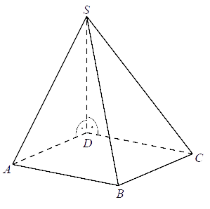 Oblicz objętość tego ostrosłupa.
\(6\sqrt{3}\)
Na rysunku jest przedstawiona prosta zawierająca przekątną \(AC\) rombu \(ABCD\)
oraz wierzchołki \(A=(-2,1)\) i \(C=(4,5)\) tego rombu.  Wskaż równanie prostej zawierającej przekątną \(BD\) tego
rombu.
Wskaż równanie prostej zawierającej przekątną \(BD\) tego
rombu.
Wskaż równanie prostej zawierającej przekątną \(BD\) tego
rombu. A.\( y=-\frac{2}{3}x+\frac{11}{3} \)
B.\( y=-\frac{3}{2}x+4 \)
C.\( y=-x+4 \)
D.\( y=-\frac{3}{2}x+\frac{9}{2} \)
D
Odcinek \(AB\) jest średnicą okręgu o środku w punkcie \(O\) i promieniu r (zobacz
rysunek). 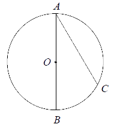 Cięciwa \(AC\) ma
długość \(r\sqrt{3}\), więc
A.\( |\sphericalangle AOC|=130^\circ \)
B.\( |\sphericalangle ABC|=90^\circ \)
C.\( |\sphericalangle BOC|=60^\circ \)
D.\( |\sphericalangle BAC|=45^\circ \)
C
Punkty \(A\), \(B\), \(C\), \(D\), \(E\) są położone w tej kolejności na okręgu o
środku \(O\) (zobacz rysunek). Odcinki \(BD\) i \(AC\) są średnicami tego okręgu oraz
\(|\sphericalangle BEC|=60^\circ \). Oblicz miarę kąta \(CBD\). 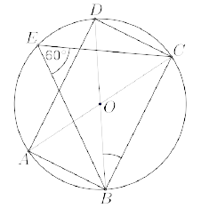
\(30^\circ \)
Punkty \(A\), \(B\), \(C\), \(D\) są położone w tej kolejności na okręgu o środku
\(O\) (zobacz rysunek). Odcinek \(DB\) jest średnicą tego okręgu i \(|\sphericalangle BAC|=\alpha
\), \(|\sphericalangle CBD|=\beta \). Wykaż, że \(\alpha +\beta =90^\circ \). 
Parami różne punkty \(A\), \(B\), \(C\), \(D\), \(E\) leżą na okręgu. Odcinki
\(DE\) i \(AC\) są równoległe, zaś odcinek \(BD\) jest średnicą tego okręgu (zobacz rysunek). Wykaż,
że prosta \(BE\) zawiera wysokość trójkąta \(ABC\) opuszczoną na bok \(AC\). 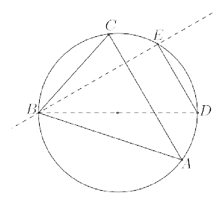
Końce odcinka \(AB\) o długości \(9\) są środkami okręgów o promieniach \(6\) i
\(4\) (zobacz rysunek). 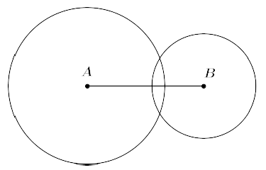 Punkt
\(C\) leży na odcinku \(AB\) i jest środkiem takiego okręgu, o promieniu większym od \(6\), że dwa
dane okręgi są do niego wewnętrznie styczne. Promień okręgu o środku \(C\) ma długość
A.\( 6{,}5 \)
B.\( 7{,}5 \)
C.\( 8{,}5 \)
D.\( 9{,}5 \)
D
Dwa okręgi o promieniach \(r\) i \(R\) są styczne zewnętrznie i są styczne do
wspólnej prostej w punktach \(A\) i \(B\) (zobacz rysunek). Oblicz wartość iloczynu \(rR\), jeżeli
wiadomo, że odcinek \(AB\) ma długość \(5\). 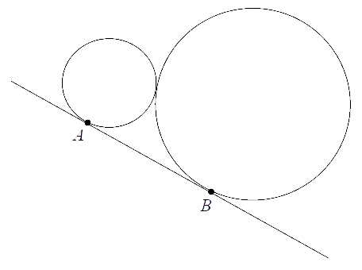
\(\frac{25}{4}\)
Dane są dwa okręgi styczne wewnętrznie: okrąg \(O_1\) o środku \(S\) i promieniu
równym \(6\) oraz okrąg \(O_2\) o środku \(T\) i promieniu długości \(2\). Z punktu \(S\)
poprowadzono półproste styczne do okręgu \(O_2\) w punktach \(K\) i \(L\). Oblicz pole czworokąta
\(SKTL\).
\(4\sqrt{3}\)
Pole trójkąta \(ABC\) równe jest \(S\). Każdy bok trójkąta podzielono w stosunku
\(x : y : x\), gdzie \(x\) i \(y\) są pewnymi liczbami dodatnimi. Wyznacz pole sześciokąta, którego
wierzchołkami są punkty podziałów boków trójkąta (zobacz rysunek). 
\(S\left (1-3\left (\frac{x}{2x+y}\right )^2\right )\)
Odcinki \(AD\) i \(BE\) przecinają się w punkcie \(C\). W trójkątach \(ABC\) i
\(CDE\) zachodzą związki: \(|\sphericalangle CAB|=|\sphericalangle CED|\), \(|AC|=5\), \(|BC|=3\),
\(|CE|=10\) (zobacz rysunek). Wykaż, że trójkąty \(ABC\) i \(CDE\) są podobne. Oblicz długość boku
\(CD\). 
\(6\)
Dany jest trójkąt prostokątny \(ABC\), w którym przyprostokątna \(AC\) ma długość
\(12\). Punkt \(E\) jest środkiem przeciwprostokątnej \(AB\), spodek \(D\) wysokości \(CD\) leży
między punktami \(A\) i \(E\), a odległość między punktami \(D\) i \(E\) jest równa \(1\) (zobacz
rysunek). Oblicz obwód tego trójkąta. 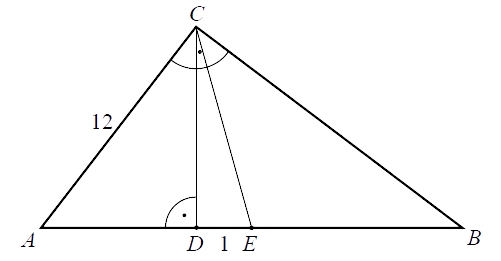
\(30+6\sqrt{5}\)
Na rysunku przedstawiono trapez \(ABCD\) oraz zaznaczono wysokości \(DE\) i \(CF\)
tego trapezu. Punkt \(F\) jest środkiem podstawy \(AB\), a punkt \(E\) dzieli tę podstawę w stosunku
\(2:5\). Wykaż, że punkt przecięcia wysokości \(CF\) z przekątną \(DB\) dzieli tę przekątną w
stosunku \(3:7\), licząc od wierzchołka \(D\). 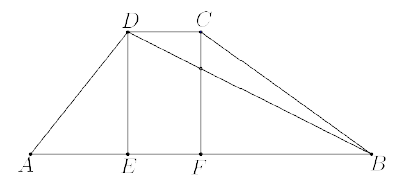
W trójkącie \(ABC\) o bokach długości \(|AC|=b\), \(|BC|=a\) i kącie między nimi
\(60^\circ \) poprowadzono dwusieczną kąta \(ACB\), która przecięła bok \(AB\) w punkcie \(D\).
Zapisz długość odcinka \(CD\) w zależności od \(a\) i \(b\).
\(\frac{\sqrt{3}ab}{a+b}\)
Dany jest trapez prostokątny \(ABCD\) taki, że kąty przy wierzchołkach \(A\) i
\(D\) są proste oraz \(|AB|=10\), \(|DC|=6\), a przekątna \(AC\) jest dwa razy dłuższa od ramienia
\(DA\). Na podstawie \(AB\) obrano taki punkt \(X\), że \(|CX|=|CB|\) (zobacz rysunek). Oblicz sinus
kąta \(XCB\). 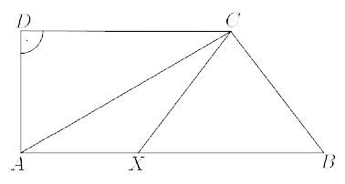
\(\frac{4\sqrt{3}}{7}\)
Wyznacz współrzędne środka okręgu opisanego na kwadracie, którego jeden z boków
jest zawarty w prostej o równaniu \(y=2x-2\), a punkt \(A=(1,5)\) jest jego wierzchołkiem. Rozważ
wszystkie przypadki.
\(\left ( \frac{3}{2}, \frac{7}{2} \right )\) lub \(\left (
\frac{5}{2}, \frac{11}{2} \right )\)
Dwa boki trójkąta prostokątnego \(ABC\) są zawarte w prostych o równaniach \(y = 2x
− 3\) oraz \(y=\frac{1}{4}x-\frac{5}{4}\). Wyznacz równanie prostej, która przechodzi przez punkt
\(K=(4,-2)\) i zawiera trzeci bok trójkąta \(ABC\). Rozważ wszystkie możliwości.
Różnica współczynników kierunkowych dwóch prostych jest równa różnicy odwrotności
tych współczynników. Uzasadnij, że te proste są prostopadłe albo równoległe.
Punkty \(A\) i \(B\), których pierwsze współrzędne są równe odpowiednio \(−2\) i
\(2\), należą do wykresu funkcji \(f(x)=-\frac{8}{x}+3\). Oblicz współrzędne punktu \(C\), wiedząc,
że punkt \(B\) jest środkiem odcinka \(AC\).
\(C=(6,-9)\)
Prosta \(l\) przecina okrąg o środku \(S\) w punktach
\(A=\left(1-\sqrt{2},-\frac{1}{8}\right)\) i \(B=\left(1+\sqrt{2},-\frac{3}{8}\right)\). Punkt \(S\)
leży na prostej \(l\). Sprawdź, czy punkt \(S\) leży na prostej \(k\) o równaniu \(x − 4 y = 0\).
nie
Dany jest sześciokąt foremny \(ABCDEF\), którego środkiem symetrii jest punkt
\(O=(3,-\sqrt{3})\), a wierzchołek \(A\) ma współrzędne \(A=(1,-3\sqrt{3})\). Wiadomo, że punkt
\(P=(4,-2\sqrt{3})\) jest środkiem odcinka \(BO\). Oblicz współrzędne pozostałych wierzchołków tego
sześciokąta.
\(A = (1 ; -3\sqrt{3})\)
\(B = (5 ; -3\sqrt{3})\)
\(C = (7 ; -\sqrt{3})\)
\(D = (5 ; \sqrt{3})\)
\(E = (1 ; \sqrt{3})\)
\(F = (-1 ; -\sqrt{3})\)
\(B = (5 ; -3\sqrt{3})\)
\(C = (7 ; -\sqrt{3})\)
\(D = (5 ; \sqrt{3})\)
\(E = (1 ; \sqrt{3})\)
\(F = (-1 ; -\sqrt{3})\)
Punkt \(M=(2,1)\) jest środkiem boku \(AB\), a punkt \(N=(8,3)\) to środek boku
\(BC\) kwadratu \(ABCD\). Oblicz długość boku kwadratu \(ABCD\).
\(4\sqrt{5}\)
Trójkąt o wierzchołkach \(A=(-6,0)\), \(B=(6,4)\) i \(C=(-3,-8)\) przekształcono
przez symetrię środkową względem początku układu współrzędnych i otrzymano trójkąt \(A_1B_1C_1\).
Oblicz sumę kątów wewnętrznych wielokąta, który jest częścią wspólną trójkąta \(ABC\) i jego obrazu,
tj. \(A_1B_1C_1\).
\(720^\circ \)
Prosta \(y = 0\) jest osią symetrii figury złożonej z dwóch prostych o równaniach
\(y=(p+2)x-q\) i \(y=(q-5)x+2p\). Wyznacz \(p\) i \(q\). Narysuj te proste w układzie współrzędnych.
\(p=1\), \(q=2\)
Dany jest trapez równoramienny \(ABCD\), niebędący równoległobokiem, w którym
\(AB||CD\) oraz \(A=(-9,7)\), \(B=(3,1)\), \(D=(-3,10)\). Trapez \(A_1B_1C_1D_1\) jest obrazem
trapezu \(ABCD\) w symetrii środkowej względem początku układu współrzędnych. Wyznacz współrzędne
wierzchołków trapezu \(A_1B_1C_1D_1\) oraz równanie osi symetrii tego trapezu.
\(y=2x-10\)
Punkt \(P\) leży wewnątrz trójkąta o wierzchołkach \(A=(6,0)\), \(B=(0,4)\),
\(C=(0,0)\). Oznaczmy przez \(P_{AC}\) obraz punktu \(P\) w symetrii osiowej względem prostej
\(AC\), a przez \(P_{BC}\) obraz punktu \(P\) w symetrii osiowej względem prostej \(BC\). Uzasadnij,
że punkty \(P_{AC}\), \(C\) i \(P_{BC}\) leżą na jednej prostej.
Przedstawiona na rysunku bryła składa się z walca i półkuli. Wysokość walca jest
taka, jak promień jego podstawy i jest równa \(R\). 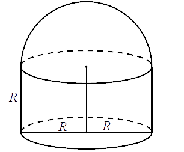 Objętość tej bryły jest równa
A.\( \pi R^3 \)
B.\( \frac{5}{3}\pi R^3 \)
C.\( \frac{2}{3}\pi R^3 \)
D.\( 2\pi R^3 \)
B
Podstawą graniastosłupa prostego czworokątnego \(ABCDEFGH\) jest kwadrat \(ABCD\)
(zobacz rysunek). 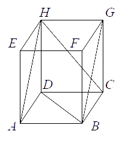 Kąt \(AHC\)
między przekątnymi sąsiednich ścian bocznych ma \(50^\circ \). Kąt \(DBG\) między przekątną podstawy
a przekątną ściany bocznej jest równy
A.\( 60^\circ \)
B.\( 65^\circ \)
C.\( 75^\circ \)
D.\( 80^\circ \)
B
Dany jest ostrosłup prawidłowy czworokątny \(ABCDS\), którego ściany boczne są
trójkątami równobocznymi. Punkty \(G\), \(E\) i \(F\) są odpowiednio środkami odcinków \(AD\),
\(BC\) i \(CS\) (zobacz rysunek). 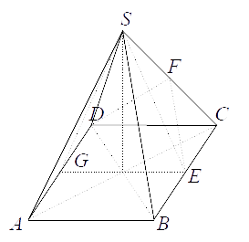 Kątem między przeciwległymi ścianami bocznymi jest kąt
A.\( DFE \)
B.\( GES \)
C.\( ESG \)
D.\( ASC \)
C
Wysokość graniastosłupa prawidłowego trójkątnego \(ABCDEF\) (zobacz rysunek) jest
równa \(8\), a tangens kąta między wysokością trójkąta \(ABF\) poprowadzoną z wierzchołka \(F\) i
płaszczyzną podstawy \(ABC\) tego graniastosłupa jest równy \(\frac{4\sqrt{3}}{3}\). Oblicz pole
trójkąta \(ABF\). 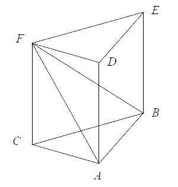
\(4\sqrt{19}\)
Objętość graniastosłupa prawidłowego trójkątnego, w którym krawędź podstawy ma
długość \(4\), jest równa \(16\sqrt{6}\) (zobacz rysunek). Oblicz miarę kąta nachylenia przekątnej
ściany bocznej do sąsiedniej ściany bocznej. 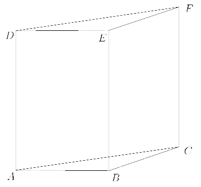
\(30^\circ \)
W graniastosłupie prawidłowym sześciokątnym krótsza przekątna graniastosłupa jest
nachylona do płaszczyzny podstawy pod kątem \(\beta \) takim, że \(\sin \beta =\frac{2}{\sqrt{7}}\).
Oblicz miarę kąta \(\alpha \), jaki tworzy dłuższa przekątna tej bryły z płaszczyzną podstawy. 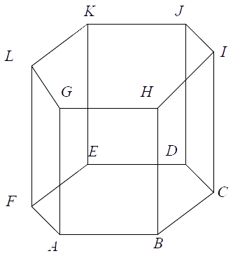
\(45^\circ \)
Dany jest ostrosłup prawidłowy trójkątny o krawędzi podstawy długości \(6\sqrt{3}\)
oraz krawędzi bocznej długości \(12\). Wyznacz miarę kąta między ścianami bocznymi tego ostrosłupa.
Wynik podaj z dokładnością do \(2^\circ \).
\(68^\circ \)
W ostrosłupie prawidłowym czworokątnym kąt pomiędzy wysokością ostrosłupa a
wysokością ściany bocznej jest równy \(30^\circ \). Promień okręgu opisanego na podstawie jest równy
\(2\sqrt{2}\). Oblicz sinus kąta nachylenia krawędzi bocznej ostrosłupa do płaszczyzny podstawy.
\(\frac{\sqrt{15}}{5}\)
W stożku stosunek pola powierzchni bocznej do pola podstawy jest równy
\(\frac{3}{2}\). Oblicz sinus kąta między tworzącą a płaszczyzną podstawy tego stożka.
\(\frac{\sqrt{5}}{3}\)
W trójkącie \(ABC\) punkt \(D\) jest środkiem boku \(AB\) oraz \(|CD|=|CB|\)
(zobacz rysunek). Bok \(CB\) przedłużono tak, że \(|CB|=|BE|\). Wykaż, że \(|AC|=|DE|\). 
Tworząca stożka o kącie rozwarcia \(\alpha \) ma długość \(8\). Pole powierzchni
całkowitej tego stożka jest równe \(48\pi\). Oblicz objętość stożka oraz miarę kąta \(\alpha \).
\(\alpha =60^\circ \) i \(V=\frac{64\pi \sqrt{3}}{3}\)
Dany jest graniastosłup prawidłowy czworokątny \(ABCDEFGH\) o krawędzi podstawy
długości \(4\sqrt{2}\) oraz krawędzi bocznej równej \(8\). Graniastosłup przecięto płaszczyzną
przechodzącą przez środki krawędzi \(AD\) i \(DC\) oraz przez wierzchołek \(H\) (zobacz rysunek).
Oblicz pole otrzymanego przekroju. 
\(4\sqrt{17}\)
W sześcianie \(ABCDA_1B_1C_1D_1\) przekątna \(AC_1\) tworzy z płaszczyzną \(ABCD\)
kąt \(\alpha \). Punkty \(L\) i \(J\) są odpowiednio środkami krawędzi \(DD_1\) i \(BB_1\) oraz
\(|\sphericalangle LAJ|=2\beta \). Uzasadnij, że \(cos\alpha =\operatorname{tg} \beta \).
W ostrosłupie prawidłowym trójkątnym krawędź podstawy jest \(2\) razy dłuższa od
wysokości ostrosłupa poprowadzonej na tę podstawę. Wyznacz kąt nachylenia ściany bocznej do
podstawy.
\(60^\circ \)
Dany jest ostrosłup prawidłowy czworokątny, którego wysokość ma długość \(H\) oraz
kąt między krawędzią boczną i płaszczyzną podstawy jest równy \(60^\circ \). Wyznacz wzór na pole
powierzchni bocznej tego ostrosłupa w zależności od wysokości \(H\).
\(\frac{2H^2\sqrt{7}}{3}\)
W stożku różnica długości tworzącej i promienia podstawy jest równa \(6\). Cosinus
kąta \(\alpha \) między tworzącą a płaszczyzną podstawy tego stożka jest równy \(\frac{2}{5}\).
Oblicz pole powierzchni bocznej tego stożka.
\(40\pi \)
Graniastosłup prawidłowy czworokątny \(ABCDEFGH\) o krawędzi podstawy długości
\(5\) oraz krawędzi bocznej długości \(5\sqrt{6}\) przecięto płaszczyzną przechodzącą przez
wierzchołek \(A\) oraz punkty \(L\) oraz \(J\) leżące na przeciwległych krawędziach bocznych w
równych odległościach od dolnej podstawy. Otrzymany przekrój jest czworokątem \(AJKL\), którego
przekątna \(AK\) tworzy z płaszczyzną podstawy kąt \(\alpha \) (zobacz rysunek). Zapisz pole tego
przekroju w zależności od kąta \(\alpha \). Jakie wartości przyjmuje \(\alpha \)? 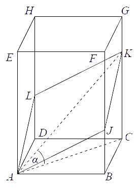
\(\frac{25}{\cos \alpha }\)
Dana jest prosta o równaniu \(y=-\frac{1}{2}x+b\), gdzie \(b\gt 0\) przecina oś
\(Oy\) w punkcie \(A\), zaś oś \(Ox\) w punkcie \(B\) (zobacz rysunek). Pole trójkąta \(AOB\)
wyznaczonego przez tę prostą i osie układu współrzędnych jest równe 1\(\)6. Oblicz współrzędne
środka okręgu opisanego na trójkącie \(AOB\). 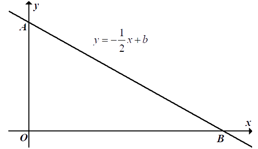
\((4,2)\)
Punkty \(A=(7,6)\) i \(B=(1,-2)\) są wierzchołkami trójkąta równobocznego \(ABC\).
Promień koła opisanego na tym trójkącie jest równy
A.\( \frac{5\sqrt{3}}{6} \)
B.\( \frac{5\sqrt{3}}{3} \)
C.\( \frac{10\sqrt{3}}{6} \)
D.\( \frac{10\sqrt{3}}{3} \)
D
Trójkąt \(T\) jest podobny do trójkąta \(T_1\) w skali \(k=\frac{1}{6}\), a trójkąt
\(T_2\) jest podobny do trójkąta \(T\) w skali \(k=3\). Pole trójkąta \(T_2\) jest równe \(24\).
Trójkąt \(T_1\) ma pole równe
A.\( 12 \)
B.\( 48 \)
C.\( 72 \)
D.\( 96 \)
D
Punkt \(A=(2,7)\) jest wierzchołkiem kwadratu \(ABCD\), a punkt \(S=(6,5)\) jest
środkiem okręgu opisanego na tym kwadracie. Bok tego kwadratu ma długość
A.\( \sqrt{10} \)
B.\( \sqrt{20} \)
C.\( 2\sqrt{10} \)
D.\( 2\sqrt{20} \)
C
W trójkącie prostokątnym \(ABC\) kąt przy wierzchołku \(A\) jest prosty oraz \(\sin
(\sphericalangle ABC)=\frac{1}{3}\). Oblicz \(\operatorname{tg} (\sphericalangle ABC)\).
\(\frac{\sqrt{2}}{4}\)
Do okręgu o środku \(O\) poprowadzono z zewnętrznego punktu \(P\) dwie styczne
przecinające się w \(P\) pod kątem \(50^\circ \) (zobacz rysunek). Punktami styczności są,
odpowiednio, punkty \(A\) i \(B\). 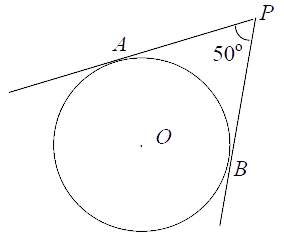 Kąt \(AOB\) ma miarę
A.\( 90^\circ \)
B.\( 120^\circ \)
C.\( 130^\circ \)
D.\( 150^\circ \)
C
Na płaszczyźnie dane są trzy punkty: \(A=(-1,1)\), \(B=(5,-3)\) oraz \(C=(3,2)\).
Wyznacz równanie środkowej poprowadzonej do boku \(AB\) w trójkącie \(ABC\).
\(y=3x-7\)
Wykres funkcji kwadratowej \(f\) danej wzorem \(f(x)=2x^2-5x+3\) przecięto prostymi
o równaniach \(x=-1\) oraz \(x=2\). Oblicz odległość między punktami przecięcia tych prostych z
wykresem funkcji \(f\).
\(3\sqrt{10}\)
Niech prosta \(k\) będzie dana równaniem \(y=2x+1\). Uzasadnij, że jej obrazem w
symetrii środkowej względem początku układu współrzędnych jest prosta do niej równoległa.
W pojemniku jest \(10\) kul, w tym \(b\) kul białych i \(10-b\) kul czarnych, gdzie
\(b\ne 5\). Z tego pojemnika losujemy dwa razy po jednej kuli ze zwracaniem. Wykaż, że
prawdopodobieństwo zdarzenia polegającego na tym, że otrzymamy dwie kule tego samego koloru, jest
większe od \(\frac{1}{2}\).
Wykonano pomiary wysokości czterech krzeseł i każde dwa rezultaty były różne. Adam
zapisał wyniki w metrach i odchylenie standardowe jego danych było równe \(\sigma _A\). Bogdan
zapisał te wyniki w centymetrach i odchylenie standardowe jego danych było równe \(\sigma _B\).
Wynika stąd, że
A.\( \sigma _A=10\sigma _B \)
B.\( \sigma _A = 100\sigma _B \)
C.\( 10\sigma _A=\sigma _B \)
D.\( 100\sigma _A=\sigma _B \)
D
Dany jest zbiór \(A=\{1,2,...,2n,2n+1\}\), gdzie \(n\ge 1\), złożony z \(2n+1\)
kolejnych liczb naturalnych. Wykaż, że liczba wszystkich par \((a,b)\) takich, że \(a\in A\), \(b\in
A\) i \(a\ne b\) oraz suma \(a+b\) jest nieparzysta, jest większa od liczby par, których suma jest
parzysta.
Rzucono \(100\) razy sześcienną kostką do gry. Średnia arytmetyczna liczb oczek w
pierwszych \(40\) rzutach była równa \(3{,}75\), a średnia arytmetyczna liczb oczek w kolejnych
\(60\) rzutach była równa \(4{,}25\). Średnia arytmetyczna liczb oczek w \(100\) rzutach jest
A.mniejsza od \( 4 \)
B.równa \( 4 \)
C.równa \( 4{,}05 \)
D.większa od \( 4{,}05 \)
C
Zestaw danych: \(x_1,x_2,x_3,...,x_n\) ma średnią arytmetyczną \(a\) i odchylenie
standardowe \(s\). Wykaż, że zestaw danych: \(\frac{x_1-a}{s}, \frac{x_2-a}{s},
\frac{x_3-a}{s},...,\frac{x_n-a}{s}\) ma średnią arytmetyczną \(0\).
Adam otrzymał z trzech kolejnych klasówek następujące oceny: \(6\), \(4\), \(4\).
Oblicz, jaką ocenę otrzymał Adam z czwartej klasówki, jeżeli odchylenie standardowe otrzymanych ocen
jest równe \(\sqrt{\frac{11}{16}}\).
\(5\)
Wszystkich par \((a,b)\) takich, że \(a\in \{1,2,3,4,5,6,7\}\) i \(b\in
\{1,2,3,4,5,6,7,8,9\}\) oraz suma \(a+b\) jest podzielna przez \(3\), jest
A.mniej niż \( 21 \)
B.dokładnie \( 21 \)
C.dokładnie \( 22 \)
D.więcej niż \( 22 \)
B
Liczb ze zbioru \(Z=\{1,2,3,...,36\}\), których nie można uzyskać jako iloczynu
dwóch niekoniecznie różnych liczb ze zbioru \(\{1,2,3,...,6\}\), jest
A.\( 8 \)
B.\( 16 \)
C.\( 18 \)
D.\( 19 \)
C
Liczb naturalnych trzycyfrowych, w zapisie których każda cyfra występuje co
najwyżej raz oraz suma cyfry setek i cyfry jedności jest równa \(4\), jest
A.mniej niż \( 24 \)
B.dokładnie \( 24 \)
C.dokładnie \( 32 \)
D.więcej niż \( 32 \)
B
Ile jest wszystkich trzycyfrowych liczb naturalnych, w zapisie których każda cyfra
jest inna, żadna nie jest zerem oraz jedną z cyfr jest dziewiątka?
A.\( 56 \)
B.\( 168 \)
C.\( 216 \)
D.\( 504 \)
B
Dana jest tabela złożona z sześciu wierszy i dziewięciu kolumn (zobacz rysunek).
Oblicz, ile w tej tabeli można narysować, zgodnie z zaznaczonymi liniami, prostokątnych tabel o
czterech wierszach i czterech kolumnach. 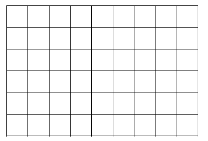
\(18\)
Wszystkie losy loterii fantowej zostały ponumerowane kolejno od numeru \(10000\) do
numeru \(99999\). Te losy, którym nadano numery o sumie cyfr równej trzy, są wygrywające, pozostałe
losy są przegrywające. Na tej loterii będziemy losować jeden los. Oblicz prawdopodobieństwo
wyciągnięcia losu przegrywającego. Wynik przedstaw w postaci ułamka dziesiętnego w przybliżeniu do
czwartego miejsca po przecinku.
\(0{,}9998\)
Na rysunku jest przedstawiony trzynastokąt wypukły o kolejnych wierzchołkach od
\(A_1\) do \(A_{13}\) oraz przekątna \(A_1A_8\) tego wielokąta.  Spośród wszystkich \(65\) przekątnych tego wielokąta
losujemy jedną. Oblicz prawdopodobieństwo zdarzenia polegającego na tym, że wylosowana przekątna
będzie przecinała się z przekątną \(A_1A_8\) w punkcie leżącym wewnątrz trzynastokąta. Wynik zapisz
w postaci ułamka nieskracalnego.
Spośród wszystkich \(65\) przekątnych tego wielokąta
losujemy jedną. Oblicz prawdopodobieństwo zdarzenia polegającego na tym, że wylosowana przekątna
będzie przecinała się z przekątną \(A_1A_8\) w punkcie leżącym wewnątrz trzynastokąta. Wynik zapisz
w postaci ułamka nieskracalnego.
Spośród wszystkich \(65\) przekątnych tego wielokąta
losujemy jedną. Oblicz prawdopodobieństwo zdarzenia polegającego na tym, że wylosowana przekątna
będzie przecinała się z przekątną \(A_1A_8\) w punkcie leżącym wewnątrz trzynastokąta. Wynik zapisz
w postaci ułamka nieskracalnego.\(\frac{6}{13}\)
Spośród wierzchołków sześcianu wybieramy losowo dwa różne wierzchołki. Oblicz
prawdopodobieństwo wylosowania wierzchołków, które są końcami tej samej przekątnej ściany sześcianu.
\(\frac{3}{7}\)
Ze zbioru wszystkich krawędzi (krawędzi bocznych i krawędzi podstawy) ostrosłupa
prawidłowego pięciokątnego losujemy jedną krawędź, a następnie z pozostałych krawędzi losujemy
drugą. Oblicz prawdopodobieństwo zdarzenia polegającego na tym, że wylosowane krawędzie będą miały
wspólny wierzchołek.
\(\frac{5}{9}\)